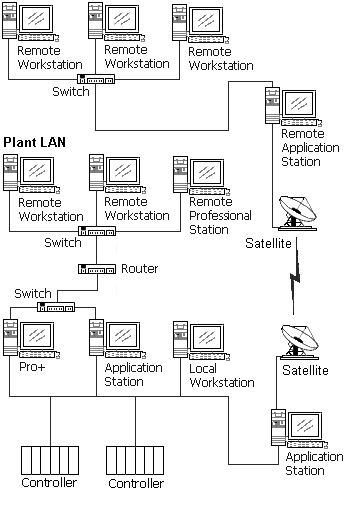

Remote application support
Remote workstations support the following DeltaV applications:
- DeltaV Operator Graphics
- Batch Operator Interface
- History View (Event Chronicle, Continuous Historian, and Batch History)
- Security related applications (FlexLock and DeltaV Logon)
- Diagnostics
- Excel
Note: A remote workstation must have an Ethernet connection to the Batch Executive workstation which the remote workstation needs to connect to. This can best be achieved by setting up the Batch Executive workstation with two additional Network Interface Cards (NIC) for Remote Primary and Secondary networks. It is recommended that the plant LAN connection not be used for this purpose.
The following Engineering Tools applications are supported on remote workstations:
Note:
A remote workstation must have an Ethernet connection to the ProfessionalPLUS workstation to run the Engineering Tools applications. This can best be achieved by setting up the ProfessionalPLUS with two additional Network Interface Cards (NIC) for Remote Primary and Secondary networks. It is recommended that the plant LAN connection not be used for this purpose.
- DeltaV Explorer, including FOUNDATION fieldbus support.
- Control Studio
- Recipe Studio
- Advanced Control Applications – DeltaV Predict and DeltaV InSight (including Tune with InSight and Inspect with InSight)
- Database Administrator
- User Manager
Remote Operator Stations have the following subsystems:
- Operator - This subsystem provides the means to configure the operations scope (for Operation license enforcement) for the Remote Operator Station. Remote Operator Stations will accept standard workstation licenses.
- Continuous Historian – This subsystem provides the means to configure historical values collected on the remote workstation.
- Alarms and Events – This subsystem provides a means to configure which Areas the workstation should participate in. However, a remote system cannot collect alarm and event history on a Remote Operator Station.
Remote Application Stations have the following subsystems:
- Continuous Historian – This subsystem provides the means to configure historical values collected on the remote workstation.
- Alarms and Events – This subsystem provides a means to configure which Areas the workstation should participate in and, optionally, can collect alarm and event information. If the Enable option is checked, the Remote Application Station stores alarms and events into a local database.
- Remote Network – This is a nested remote network. Nodes assigned to this network route their real-time communications through this Application Station.
A remote network on a remote server is used when using satellites. This reduces the amount of slow message traffic sent to the control system.
